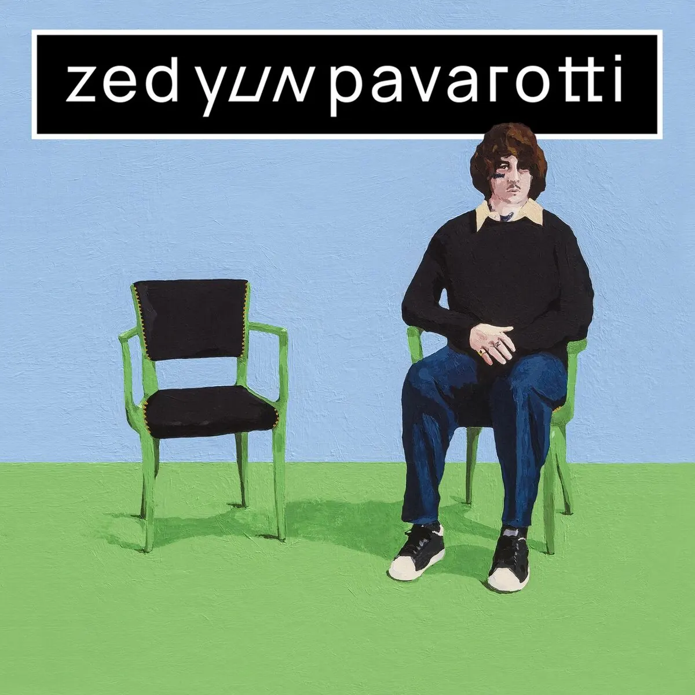

Publié le 10 novembre 2026

Zed Yun Pavarotti a sorti le 6 novembre 2026 son troisième album Unmiracle, un projet de 20 titres distribué par Entreprise. Le chanteur stéphanois prépare aussi sa tournée 2027 avec une date à l'Olympia le 17 février.
Trois ans après la sortie de son précédent disque, Charlan Zouaoui-Peyrot de son vrai nom revient avec une proposition imposante. Le disque s'étend sur plus d'une heure d'écoute. Il s'éloigne encore un peu plus des codes habituels du rap français. L'ambiance générale lorgne ouvertement vers le rock indépendant anglo-saxon et la chanson mélancolique.
Selon la fiche officielle du projet sur Apple Music, cette création rassemble vingt compositions originales sans concessions commercialistes. Les guitares électriques saturées remplacent ici les productions synthétiques habituelles. Le phrasé de l'artiste oscille en permanence entre le chant scandé et les envolées pop entêtantes.
Pourquoi l'album Unmiracle marque-t-il une rupture ?
Zed Yun Pavarotti abandonne définitivement les repères du rap classique pour assumer une ligne rock et pop alternative. Trois ans après Encore, le Stéphanois élargit son univers sonore sans renier la mélancolie brute de ses débuts sur l'album Beauseigne.
L'album de 20 morceaux alterne riffs de guitare saturés et refrains entêtants, comme sur le single Si Dieu fume. La présence de la chanteuse Marguerite Thiam apporte un contrepoint vocal réussi sur la ballade Quand est-ce qu'on oublie qu'on aime. D'autres morceaux comme Sous ma veste ou Paroxétine affichent un rythme plus nerveux.
L'artiste refuse la facilité des formats courts actuels. Il livre une œuvre dense où la poésie urbaine côtoie une urgence punk maîtrisée. Ce choix esthétique affirmé démarque nettement le projet au sein des sorties automnales de la scène française.
| Album | Année de sortie | Nombre de titres | Orientation musicale |
|---|---|---|---|
| Grand Casino | 2020 | 14 | Rap mélancolique et cloud |
| Encore | 2023 | 13 | Pop rock et rap alternatif |
| Unmiracle | 2026 | 20 | Rock alternatif et pop brute |
Où voir Zed Yun Pavarotti en concert en 2027 ?
La tournée Unmiracle Tour démarrera en janvier 2027 à travers plusieurs grandes villes françaises. Après une série de six dates intimes programmées à l'automne 2026, l'artiste stéphanois investira des salles d'une tout autre envergure pour présenter ses nouveaux titres.
Le point d'orgue de cette tournée se déroulera à l'Olympia de Paris le 17 février 2027. Vous pouvez consulter les programmations de la capitale dans notre dossier sur les concerts rap à Paris, mais aussi retrouver l'ensemble des dates nationales sur l'agenda général des concerts rap.
D'après la billetterie d'InfoConcert, la tournée passera également par Marseille, Bordeaux, Lille et Villeurbanne. La mise en vente rencontre un succès rapide auprès d'un public fidèle qui suit la métamorphose de l'artiste depuis ses débuts à Saint-Étienne.
Sur 20 pistes, tout n'est pas d'une égale intensité. Deux ou trois morceaux secondaires auraient gagné à être coupés pour resserrer la trajectoire du projet. Mais la prise de risque reste totale, sincère et rafraîchissante.